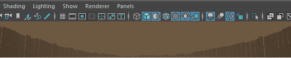

可以在“首选项”(Preferences)窗口的“帮助”(Help)类别中设置以下首选项。
若要恢复出厂默认设置，请在此窗口中选择“”(Edit > Restore Default Settings)。请注意，这将重置“首选项”(Preferences)窗口中每个类别的首选项。
视图中消息(In-view Messages)
您可以显示、隐藏或更改某些工具、模式和操作的视图中消息的显示。

视图中消息示例
- 启用(Enable)
-
显示或隐藏所有视图中消息。默认设置为启用。注： 您还可以在平视显示仪选项中显示或隐藏视图中消息。
- 用户帮助消息(User assistance messages)
-
显示或隐藏说明如何执行操作的消息。默认设置为启用。
- 状态信息消息(Status information messages)
-
显示或隐藏用于提供有关 Maya 状态更改的信息的消息。默认设置为启用。
- 显示时间(Display time)
-
设定工具消息会显示在屏幕上的时间（以秒为单位）。默认值为 2 秒。
- 字体大小
-
设置视图中消息的文字大小，以点为单位。默认值为 12 点。
- 背景不透明度(Background opacity)
-
设置视图中消息背景的不透明度，以百分比表示。默认值为 75，其中 0 是完全透明，100 是完全不透明。注： 在 Linux 版 Maya 中，“背景不透明度”(Background Opacity)选项仅在运行支持合成的窗口管理器时可用。
弹出帮助
- 显示工具动画演示(Display ToolClips)
-
可用于启用或禁用工具动画演示（即将鼠标悬停在工具上时弹出的小型帮助面板）。提示： 您可以添加自己的内容以自定义工具动画演示。请参见自定义工具动画演示。
- 仅显示工具名称和快捷方式(Display tool name and shortcut only)
-
启用时，弹出菜单仅显示工具名称和快捷方式，而不包括任何工具动画演示内容。
帮助位置(Help Location)
- 语言(Language)
-
指定使用“帮助”时 Maya 加载的文档语言集。
- Autodesk 网站(Autodesk Web Site)
-
Maya 显示来自 Autodesk 网站的“帮助”。这是“Maya 帮助”位置的默认设置。
- 自定义(Custom)
-
Maya 显示来自指定的自定义本地或网络位置的“帮助”。
单击
 图标，浏览到安装 Maya 帮助的自定义位置，然后选择 index.html 文件。
注： 使用“自定义”(Custom)选项时，不支持使用 Firefox 浏览器浏览 UNC 文件路径。将帮助位置映射到本地驱动器，或使用其他浏览器。
图标，浏览到安装 Maya 帮助的自定义位置，然后选择 index.html 文件。
注： 使用“自定义”(Custom)选项时，不支持使用 Firefox 浏览器浏览 UNC 文件路径。将帮助位置映射到本地驱动器，或使用其他浏览器。
有关详细信息，请参见使用 Maya 帮助。